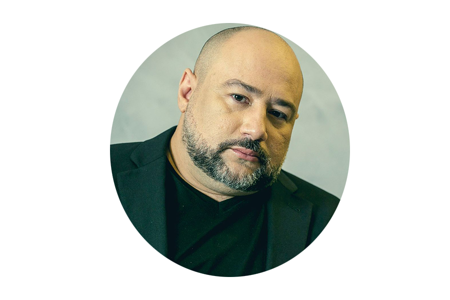

Sobre o SciMinds
Destacando a importância do desenvolvimento da mente e do pensamento crítico através do
aprendizado científico, consideramos que a criação de uma plataforma de ensino online
dedicada à ciência torna-se imperativa na realidade atual do Brasil. Isso se deve à urgente
necessidade de democratizar o conhecimento científico, fornecer recursos educacionais de alta
qualidade e preparar a população para os desafios de um mercado de trabalho em constante evolução.
A educação científica é fundamental para a tomada de decisões informadas e para o progresso da
sociedade.
SciMinds é uma iniciativa que surge para atender essa necessidade, oferecendo um espaço digital onde
curiosidade e conhecimento se encontram. Nosso objetivo é tornar a ciência acessível a todos,
independentemente de idade ou formação, através de conteúdos interativos, didáticos e atualizados.
Acreditamos que a compreensão científica não é apenas um direito, mas uma ferramenta essencial para o
desenvolvimento individual e coletivo.
Entendemos que a ciência é um campo dinâmico, sempre em expansão, e por isso, nosso site é um ambiente
vivo de aprendizado. Aqui, você encontrará cursos, artigos, podcasts e vídeos, abrangendo uma vasta gama
de tópicos, desde as descobertas científicas mais recentes até os fundamentos básicos de diversas
disciplinas. Com uma abordagem interdisciplinar, buscamos integrar diferentes áreas do saber, mostrando
como a ciência se conecta com o cotidiano e com grandes questões globais.
Além disso, SciMinds se compromete com a promoção do pensamento crítico, incentivando a análise e o
questionamento. Queremos formar cidadãos capazes de avaliar informações científicas com discernimento,
contribuindo para uma sociedade mais informada e menos suscetível a fake news e pseudociências.
Nossa missão vai além de simplesmente disseminar conhecimento; queremos inspirar uma nova geração de
pensadores, pesquisadores e cidadãos apaixonados pela ciência. Ao conectar pessoas com os mistérios do
universo, desafios ambientais e inovações tecnológicas, SciMinds pretende ser um catalisador para a
descoberta, a inovação e a transformação social.
Nossos Eventos Científicos Online
 Descubra a Fusão de Ciência e
Tecnologia
com
Sérgio Ferraz Novaes:
Junte-se a nós para explorar a revolução da inteligência artificial na física de
partículas.
Inscreva-se agora e esteja na vanguarda da pesquisa!
Descubra a Fusão de Ciência e
Tecnologia
com
Sérgio Ferraz Novaes:
Junte-se a nós para explorar a revolução da inteligência artificial na física de
partículas.
Inscreva-se agora e esteja na vanguarda da pesquisa!
 Junte-se a nós para explorar o
cosmos com
Sérgio Sacani, o renomado astrônomo.
Descubra segredos do universo, planetas, estrelas e galáxias.
Inscreva-se agora e embarque nessa viagem cósmica
Junte-se a nós para explorar o
cosmos com
Sérgio Sacani, o renomado astrônomo.
Descubra segredos do universo, planetas, estrelas e galáxias.
Inscreva-se agora e embarque nessa viagem cósmica
Explore a Segurança Cibernética com Wanderley de Abreu Júnior, o hacker que desafiou a NASA. Aprofunde seus conhecimentos em hacking ético e proteção digital. Inscreva-se agora e fortaleça suas habilidades em segurança cibernética!
Materiais
Contato
Entre em contato conosco para mais informações:
E-mail: eventoscientificos@email.com